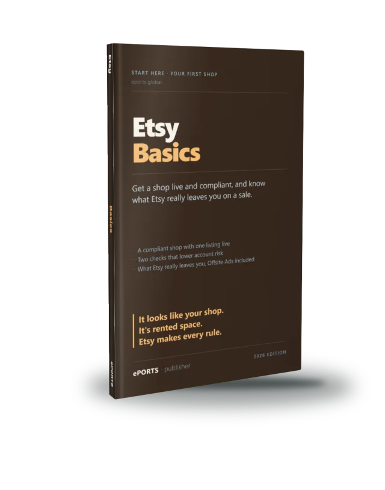

Get a shop live and compliant, and know what Etsy leaves you
For: you have never sold on Etsy — maybe with a product idea, maybe not yet.
You finish with: a real, policy-compliant Etsy shop with one fully-structured listing live, and the exact arithmetic — including the Offsite-Ads trap — of what Etsy actually leaves you on a sale.
Nine chapters: the one enemy and its three failures, the true take-home, the two account-safety checks, a ten-minute fit test, the shop foundation, the listing Etsy's search can read, the listing a human clicks, going live, and reading a quiet first week without quitting.
Comes with, free: the true-take-home calculator (spreadsheet), the permit record, the fit test, the shop-foundation, listing-hygiene, human-half, go/no-go and first-week worksheets.